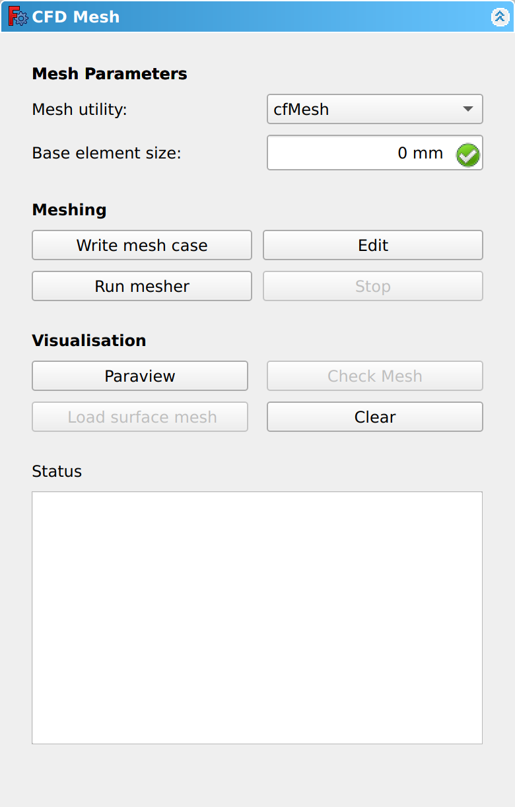
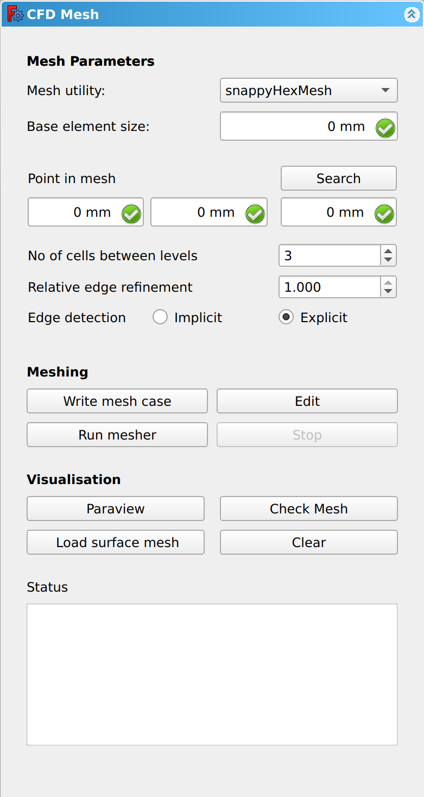
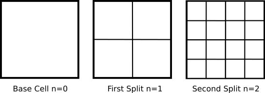
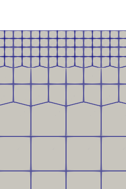

CfdOF MeshFromShape/de
|
CfdOF NetzAusForm |
| Menüeintrag |
|---|
| CfdOF → CFD-Netz |
| Arbeitsbereich |
| CfdOF |
| Standardtastenkürzel |
| Keiner |
| Eingeführt in Version |
| - |
| Siehe auch |
| Keiner |
Beschreibung
Der Befehl CfdOF NetzAusForm erstellt ein Objekt, das Daten enthält, mit denen aus Geometriedaten ein Netz erstellt werden kann. Die Daten können in einem Aufgaben-Fenster bearbeitet werden.

Anwendung
Ein Netzdatenobjekt erstellen
- Falls notwendig: Den richtigen Analysecontainer durch einen Doppleklick in der Baumansicht aktivieren.
- Die zu vernetzende Geometrie auswählen.
- Es gibt mehrere Möglichkeiten, den Befehl aufzurufen:
- Die Schaltfläche CFD Netz drücken.
- Aus dem Menü die Option CfdOF → CFD Netz wählen.
- Es wird ein [GeometryName]_Mesh-Datenobjekt zum Container hinzugefügt.
- Das Aufgaben-Fenster wird geöffnet. Siehe Optionen für weitere Informationen.
- Auf die Schaltfläche Schließen drücken, um den Befehl abzuschließen.

Das Netzdatenobjekt bearbeiten
- Einen der folgenden Schritte ausführen:
- Das Aufgaben-Fenster wird geöffnet. Weitere Informationen findet man unter Optionen.
- Auf die Schaltfläche Schließen klicken, um den Befehl abzuschließen.
Optionen
Das Aufgaben-Fenster bietet die folgenden Einstellungen:


Netzparameter
Das Ausklappmenü Mesh Utility bietet die folgenden Optionen:
- cfMesh
- cfMesh ist eine Open-Source-Bibliothek mit Erweiterungsmöglichkeiten zur automatischen Netzgenerierung. cfMesh unterstützt sowohl 3D- als auch 2D-Netze und kann Folgendes generieren:
- 3D-Netze mit überwiegend hexagonalen Elementen
- 2D-Netze mit überwiegend quadratischen Elementen
- 3D-Netze mit überwiegend tetraedrischen Elementen
- 3D-Netze mit überwiegend polyedrischen Elementen
- gmsh (tetraedrisch)
- gmsh (polyedrisch)
- Gmsh ist ein Open-Source-Generator für 3D-Finite-Elemente-Netzwerke.
- snappyHexMesh
- snappyHexMesh ist ein automatischer Split-Hex-Mesher, der Oberflächen verfeinert und an diese ausrichtet. Er erzeugt 3D-Netze aus Hexaedern und Split-Hexaedern auf der Grundlage einer triangulierten Oberflächengeometrie im Stereolithografie-Format (STL). snappyHexMesh wird für komplexe Geometrien eingesetzt.
Eingabefeld Base element size
- Die Basis, oder Hintergrund, Netz ist das Ausgangsnetz, ohne Verfeinerung. Wird der Wert auf 0 belassen, wird standardmäßig 2 % der charakteristischen Länge des Begrenzungsrahmens verwendet. Beispiel: Ein quadratischer Würfel mit einer Kantenlänge von 10 mm hat Begrenzungsrahmen-Maße von (102 + 102 + 102)0,5, wovon 2 % 0,35 mm entsprechen.
snappyHexMesh-Parameter
Die folgenden Parameter sind nur verfügbar, wenn das snappyHexMesh-Mesh-Dienstprogramm ausgewählt wurde.


Point in mesh
- Einen Positionsvektor innerhalb des zu vernetzenden Bereichs in der Form x, y, z eingeben. Anhand dieses Vektors wird ermittelt, ob die Geometrie außen vernetzt werden soll – wie beispielsweise bei einer Flüssigkeit, die über ein Rohr fließt – oder innen, wie bei einer Flüssigkeit, die durch ein Rohr fließt. Die Schaltfläche Search (Suchen) versucht, eine Position innerhalb des zu vernetzenden Bereichs zu ermitteln.
No. of cells between levels & Relative edge refinement
- Die Größe des Basiselements wurde bereits oben definiert. Die Volumen- oder Oberflächenverfeinerung erfolgt durch Aufteilung der Basiszellen in 4 Quadrate bei 2D-Modellen bzw. in 8 Sechsecke bei 3D-Modellen. Die folgende Abbildung zeigt, wie die Basiszelle bei der ersten Aufteilung (n = 1) in 4 Quadrate aufgeteilt wird und wie anschließend jede neue Zelle bei der zweiten Aufteilung (n = 2) erneut in 4 Quadrate aufgeteilt wird.


- Das Eingabefeld Relative edge refinement (Relative Kantenverfeinerung) akzeptiert Werte zwischen 0,001 und 1. Es definiert die Gittergröße relativ zum anfänglichen Hintergrundgitter. Der Wert lässt sich mit 1/(2^n-1) berechnen; bei n=2 beträgt der Wert für die relative Kantenverfeinerung beispielsweise 0,5.
- Um einen fließenden Übergang zwischen den geteilten Zellen zu erzielen, sicherstellen, dass zwischen aufeinanderfolgenden Verfeinerungsstufen eine bestimmte Anzahl von Zellen liegt. Das Eingabefeld No. of cells between levels (Anzahl der Zellen zwischen den Stufen) akzeptiert ganzzahlige Werte größer oder gleich 1; der Standardwert ist 3.


- Das obige Beispiel weist eine Verfeinerungsstufe von n=2 auf, was eine relative Kantenverfeinerung von 0,5 ergibt, wobei zwischen aufeinanderfolgenden Verfeinerungsstufen jeweils 2 Zellen liegen.
Kantenerkennung
- Implizit rastet an automatisch erkannten Kanten geometrischer Merkmale der Oberfläche ein.
- Explizit rastet an manuell erstellten Kanten der Elemente ein.
Netzerstellung
Write mesh case-Schaltfläche
- Durch Klicken auf Write mesh case werden die Netzdateien erstellt, wobei der Fortschritt im Feld Status angezeigt wird.
Edit-Schaltfläche
- Die Schaltfläche Edit (Bearbeiten) öffnet das Verzeichnis, in dem die OpenFOAM-Fall-Dateien gespeichert sind, einschließlich der oben erstellten Netzdateien im Verzeichnis constant. Weitere Informationen zu diesen Dateien und Verzeichnissen sind auf der Seite UNDER THE HOOD zu finden.
Run mesher-Schaltfläche
- Durch Klicken auf die Schaltfläche Run Mesher (Vernetzer ausführen) wird der ausgewählte Vernetzungs-Vorgang gestartet, wobei der Fortschritt im Feld Status angezeigt wird.
Stop-Schaltfläche
- Dient dazu, entweder den Prozess Write mesh case oder den Prozess Run mesher zu beenden.
Visualisierung
Paraview-Schaltfläche
- ParaView ist eine plattformübergreifende Open-Source-Anwendung zur Datenanalyse und -visualisierung. Durch Klicken auf die Schaltfläche Paraview wird der Vernetzer geöffnet, sodass das Netz überprüft werden kann.
Check Mesh-Schaltfläche
- Durch Klicken auf die Schaltfläche Check Mesh wird das OpenFOAM-Dienstprogramm checkMesh ausgeführt. Dieses überprüft die Gültigkeit eines Netzes und zeigt das Ergebnis im Berichtsbereich von FreeCAD an. Dieses Feld kann vergrößert werden, indem man den oberen Rand des Berichtsfensters nach oben zieht.
Schaltfläche Load surface mesh
- Wenn man auf Load surface mesh (Oberflächennetz laden) klickt, wird das Netz auf der Geometrie in FreeCAD angezeigt. Dabei wird nur das Netz auf der Oberfläche der Geometrie angezeigt, nicht jedoch im Inneren. Für eine detailliertere Betrachtung des Netzes kann ParaView verwendet werden.
- Achtung! Wenn die Meldung im Feld Status lautet:
- "Triangulated representation of the surface mesh is shown - Please use Paraview for full mesh visualisation." (Übersetzung: Es wird eine triangulierte Darstellung des Oberflächennetzes gezeigt – bitte Paraview für die vollständige Visualisierung des Netzes verwenden.)
- Das gezeigte Bild Load surface mesh ist nicht vollständig repräsentativ für das Netz, und man sollte das Netz in ParaView anzeigen.
Clear-Schaltfläche
- Die Schaltfläche Clear entfernt das Netz der Geometrie in FreeCAD.
Status-Ausgabefeld
- Wenn auf die Schaltfläche Write mesh case oderr Run mesher geklickt wird, wird der Fortschritt im Ausgabefeld Status zusammen mit etwaigen Fehlermeldungen angezeigt.
- Wenn Write mesh case abgeschlossen ist, lautet die letzte Meldung im Ausgabefeld Status 'Mesh case written successfully' („Netz-Fall erfolgreich geschrieben“).
- Wenn Run mesher abgeschlossen ist, lautet die letzte Meldung im Ausgabefeld Status 'Meshing completed' („Vernetzung abgeschlossen“).
Hinweise

- Menu: Analysis container, CFD mesh, Mesh refinement, Interface dynamic refinement, Shockwave dynamic refinement, Select models, Add fluid properties, Fluid boundary, Initialise, Initialisation zone, Porous zone, Mean velocity force, Reporting function, Cfd scalar transport function, Solver job control
- Erste Schritte
- Installation: Herunterladen, Windows, Linux, Mac, Zusätzliche Komponenten, Docker, AppImage, Ubuntu Snap
- Grundlagen: Über FreeCAD, Graphische Oberfläche, Mausbedienung, Auswahlmethoden, Objektname, Voreinstellungseditor, Arbeitsbereiche, Dokumentstruktur, Objekteigenschaften, FreeCAD unterstützen, Spenden
- Hilfe: Anleitungen, Videoanleitungen
- Arbeitsbereiche: Std Base, Arch, Assembly, BIM, CAM, Draft, FEM, Inspection, Material, Mesh, OpenSCAD, Part, PartDesign, Points, Reverse Engineering, Robot, Sketcher, Spreadsheet, Surface, TechDraw, Test Framework